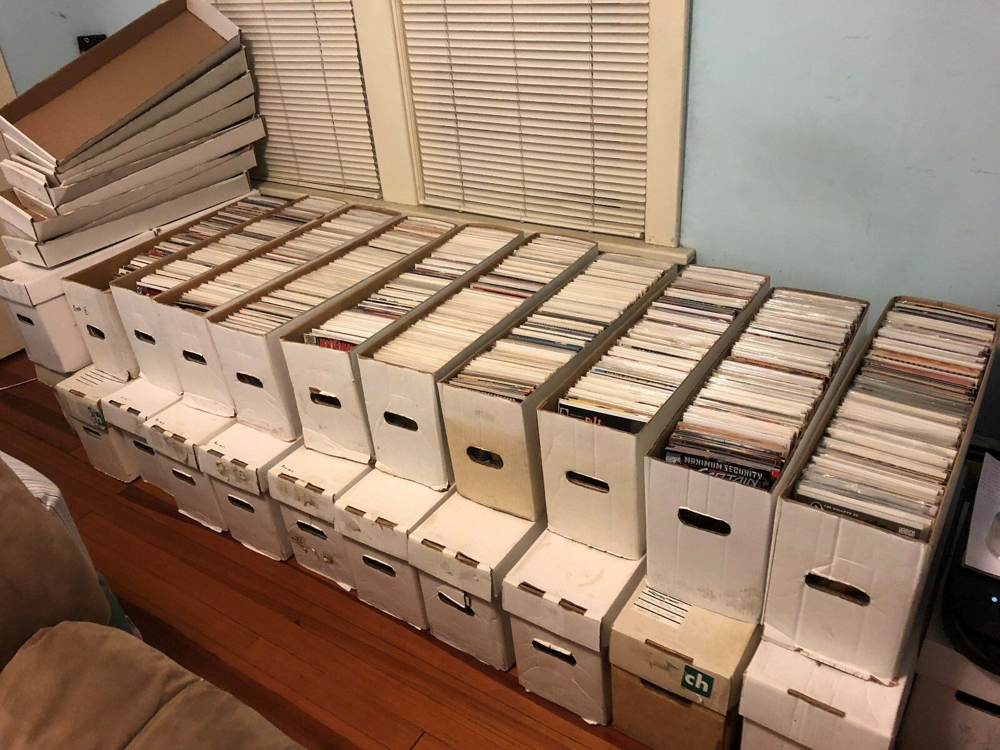
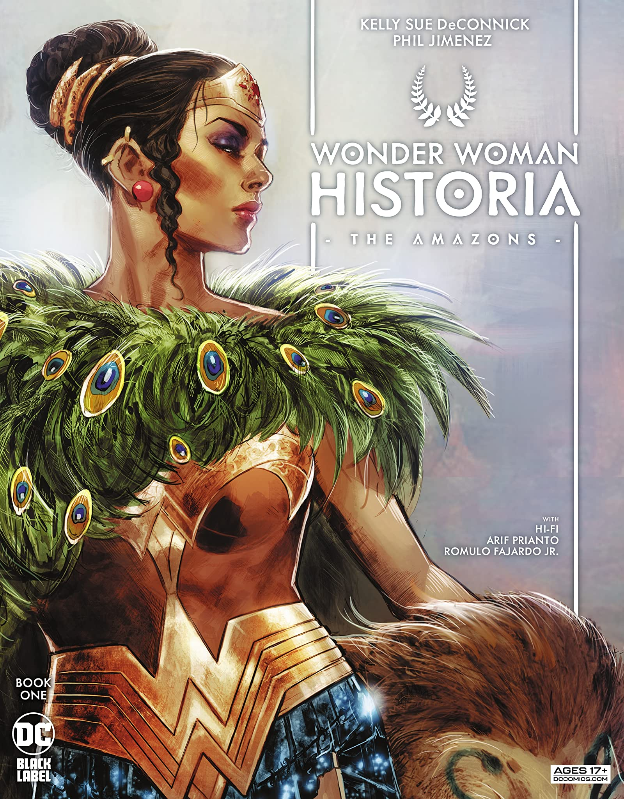
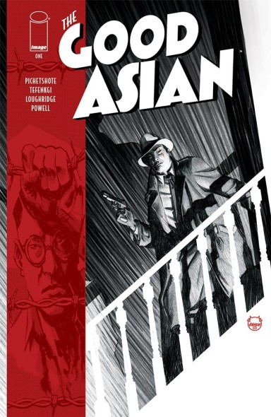
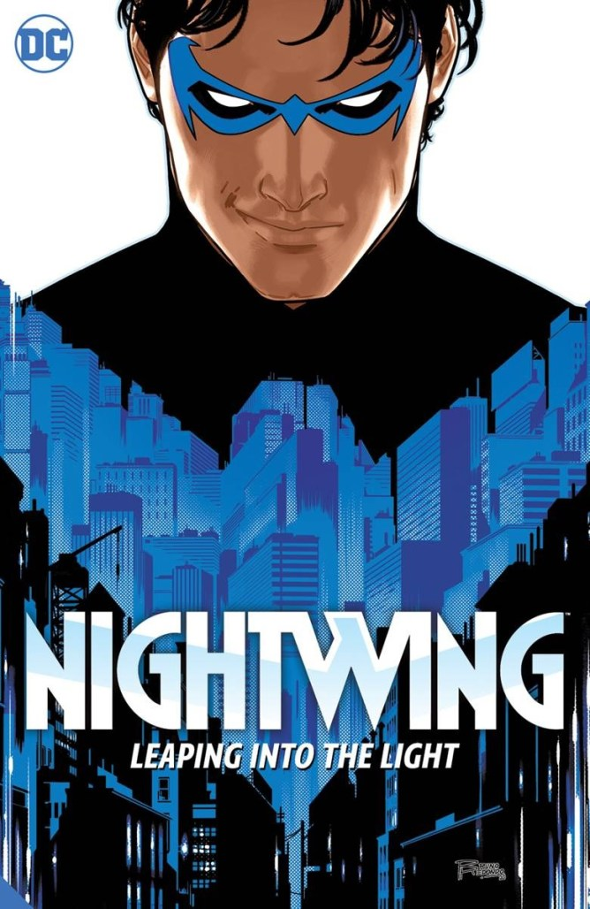

Behold! My first actual attempt at a website!
Might as well use it to show how I read way too many comics!
(Not my actual collection but a good idea of the nightmare I live with)
Here are some of my favorite books out right now!
Wonder Woman Historia is a complete reimagining of the origin of Diana Prince and the Amazons. Kelly Sue Deconnick does what she did for Captain Marvel in the 2010's by offering a fresh take on one of DC Comics' flagship characters. It removes a lot of the outdated gender politics of the original stories and remixes 70 years of Wonder Woman into something new for modern audiences. Words cannot do justice to how gorgeous Phil Jimenez' art is in person. The Amazons are given a new look that makes them look appropriately powerful and intimidating without sexualizing them. Greek mythology and visual language is turned on its head into something imaginative and truly epic. Easily one of the best looking books I've seen all year.
The Good Asian takes noir tropes and uses that lens to explore the multiple of dimensions of racism that occured in the West Coast pre World War 2. The book follows an Asian American detective from Hawaii who is given special permission to investigate a murder of someone close to him in San Francisco. Pornsak Pichetshote and Alexandre Tefenkgi's meticulous research of the era provides a stark picture of discrimination and assimilation in an era barely removed from our own. Its also just a damn good story with plenty of twists and turns along the way.

Imagine there's a silent killer that haunts one of the biggest cities in the world. He cannot be killed no matter what you throw at him and is unstoppable as a force of nature. The government has essentially given up any efforts at containment, other then setting up a poorly managed hotline to report sightings. Misinformation and internet conspiracies run rampant, which only makes the public paranoid and angry. If all that sounds eerily similar to our current Covid age, then you aren't wrong. Maniac of New York is a pitch black satire of what it is like to live in a world where a sudden violent death is accepted because its too politically risky to actually do anything about it. Elliot Kalan, who used to be head writer for The Daily Show, takes all of the frustration of the pandemic age and visualizes it in a way to show how depressingly absurd our world is right now. Andrea Mutti's watercolor like art expertly visualizes the violence without wallowing it.
To end this very brief list on something lighter, Tom Taylor and Bruno Redondo's Nightwing is just plain superhero fun. Taylor is one of the best writers in comics right now, and he brings a lot of humor and energy to his dialogue and plotting. However, what really makes this book is Bruno Redondo's art, which is constantly topping itself with his use of bright colors and clever action scenes. One recent issue is composed as one continous panel, where if you were to tear out the pages and lay them out side by side, it would make sense as a single image. Its really impressive work and one of the strongest arguments why superheroes lose a certain something when adapted to another medium. There's a reason why comics have survived for so long and why they deserve more respect other than a content farm for blockbuster movies. The book also has a cute dog which is also worth a lot.